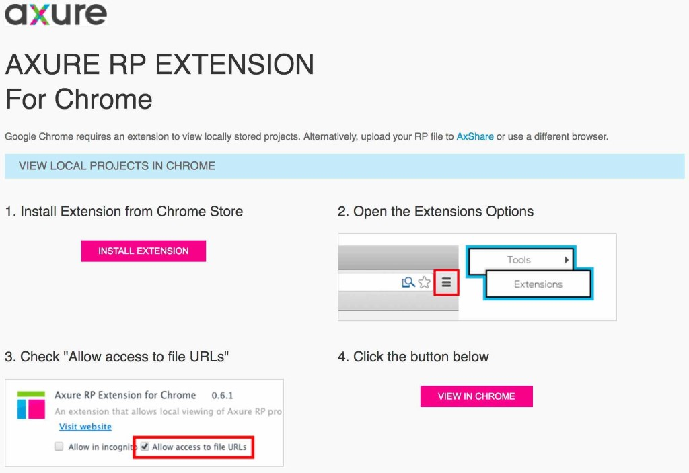

软件技巧


本地无法打开原型
比如chrome或者360之类的，可以采用小楼老师的方法，点击查看详情。
但是更建议按照图中步骤下载对应的扩展并安装，然后允许访问本地文件，最后重新打开原型即可。(需要科学上网)
生成的原型有2种页面
①配置页面
start.html，启动页。生成原型的界面，永远是start.html+原型的第1个页面，不一定是rp中左侧页面目录的第1个页面。
start_g_0.html
start_c_1.html
index.html，默认和start相似。
②普通页面
除此以外的html文件就是你创建的页面，打开默认不带左侧页面目录。
如果rp中命名了一个index的页面，则默认的的index.html不再有效，该页面为普通页面。
Axure如何添加Web字体
@font-face
名称：IOS8-Icons
代码：
font-family:IOS8-Icons;
src:URL('http://7xk31e.com1.z0.glb.clouddn.com/IOS8-Icons-Regular.ttf') format('truetype');
Axure链接到".CSS"文件
名称：FontAwesome
国内链接地址
国外链接地址
http://cdn.bootcss.com/font-awesome/4.4.0/css/font-awesome.css
https://maxcdn.bootstrapcdn.com/font-awesome/4.4.0/css/font-awesome.min.css
在Axure原型中可否直接打开本地文件
Axure RP在生成脚本时，HTML基于安全考虑是无法直接访问本地文件的，因此如果我们需要在原型生成时需要对本地文件访问就存在一些问题，然后解决这个问题。解决办法有2个：
①将本地文件上传到网络上,通过http://的链接方式来访问，即可解决.缺点是该文件麻烦。
②在原型文件中链接指定文件名称，设置好了之后，在生成原型后将链接文件拷贝到原型目录中即可在生成的原型中进行文件的访问。该方法相对比较简单，但是需要在每次生成原型文件后将文件拷入。
本地如何安装FontAwesome字体？
1、字体文件怎样是安装成功？
安装字体文件之后打开Axure，从字体列表中能够找到fontawesome即为安装成功。
Axure如何应用FontAwesome字体到原型中并展示？
解决办法1：对方也安装该字体文件。(无需网络)
解决办法2：在AxureRP7.0中配置【生成HTML文件】中的【Web字体】设置，添加链接到".css"文件，URL中填写https://maxcdn.bootstrapcdn.com/font-awesome/4.5.0/css/font-awesome.min.css。(需要网络)
解决办法3：将字体文件放到生成的HTML文件夹中，设置@font-face实现。(具体方法参考http://www.iaxure.com/1335.html)